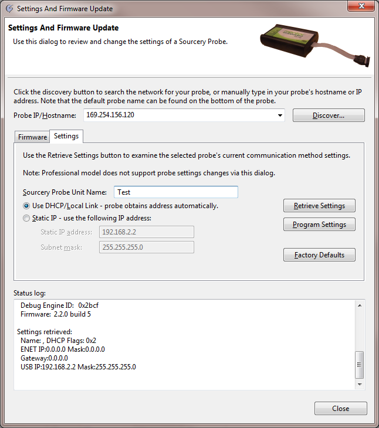

To access: From Sourcery CodeBench, select Run > Sourcery Probe > Settings and Firmware Update.
Use this dialog box to:
Update the firmware for all MESP Professional Models and ARM and MIPS MESP Personal probes.
Configure network IP Settings for Mentor Embedded Sourcery Probe Personal.
Figure A‑3.
Settings and Firmware Update Dialog Box
Table A‑2.
Settings and Firmware Update Dialog Box Contents
Field
Description
Probe IP/Hostname
Enter the IP address or hostname for the Sourcery Probe.
Discover...
Click to view a list of all Sourcery Probe devices currently available on the local subnet. This opens the Sourcery Probe Discovery Dialog Box and scans all available network adapters for Sourcery Probes.
Select for the probe to obtain the IP address configuration automatically from the DHCP server on the network. This is the default configuration.
Static IP
Select to use the static IP address configuration.
This requires you to enter the following values:
Static IP address,
Subnet mask
These values should be assigned by your network administrator.
CAUTION: Do not use this option unless you require it. The Local Link mode is recommended for the probe, even when the PC network adapter is set to static mode.
New static IP settings can result in the probe becoming inaccessible if the settings are incorrect or incompatible with the network. If the probe is inaccessible after programming new settings, you must change your network adapter settings to match the IP range used by the probe.
Retrieve Settings
Displays the existing settings for the selected probe.
Program Settings
Modifies the settings on the probe and reboots it.
NOTE: New static IP settings can result in the probe becoming inaccessible if the settings are incorrect or incompatible with the network. If the probe is inaccessible after programming new settings, you must change your network adapter settings to match the IP range used by the probe.
This shows the version number of the firmware currently used by Sourcery Probe.
Update file
This is the path to the new firmware update file.
This field also stores previously used update files, available in the dropdown list.
Browse
Click Browse to select a different update file on the file system.
By default this opens a dialog displaying the directory with the update files included with the Sourcery CodeBench installation.
Update file naming conventions are:
mesp-personal_vXYZbN for Sourcery Probe Personal and Mentor Embedded USB-JTAG Probe
mesp-professional_vXYZbN for Sourcery Probe Professional and Mentor Embedded Giga-JTAG Probe
File version
This displays the update file version.
Program update
Updates the firmware on the selected probe.
At the end of the update process the probe is rebooted automatically. It will use the new firmware after it reboots.
NOTE: Do not interrupt or cancel the update process.